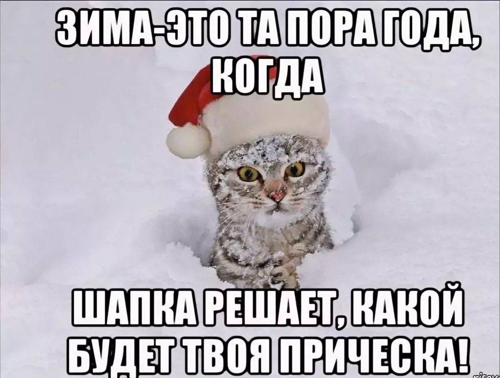

Новый год: закуски и идеи для вечера
Сайт собирает варианты закусок для праздничного стола и идеи, чем занять новогоднюю ночь. Отдельная страница посвящена классическому салату оливье

Разделы сайта
- Закуски – таблица блюд с временем приготовления и числом порций
- Оливье – состав и порядок приготовления
- Чем заняться – идеи для вечера
- Об авторе – данные о выполнении работы
Сайт создан в рамках изучения HTML и CSS, но так как какой-то опыт у меня уже был - добавила анимацию